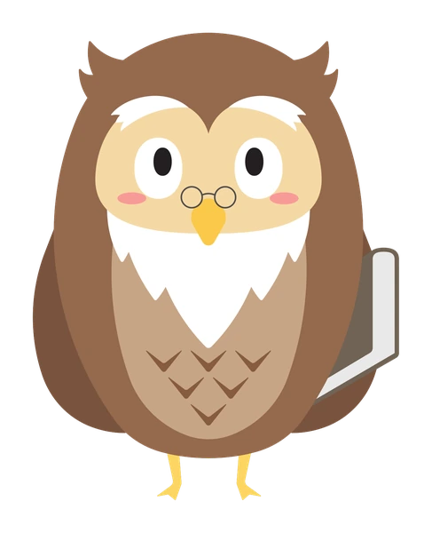
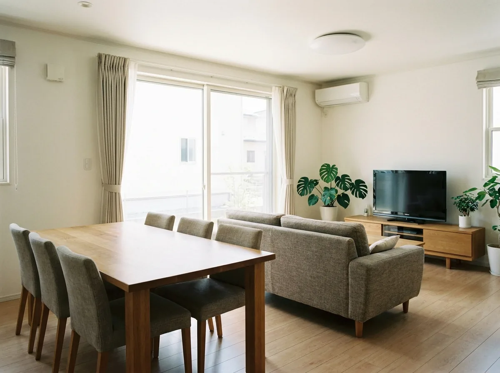
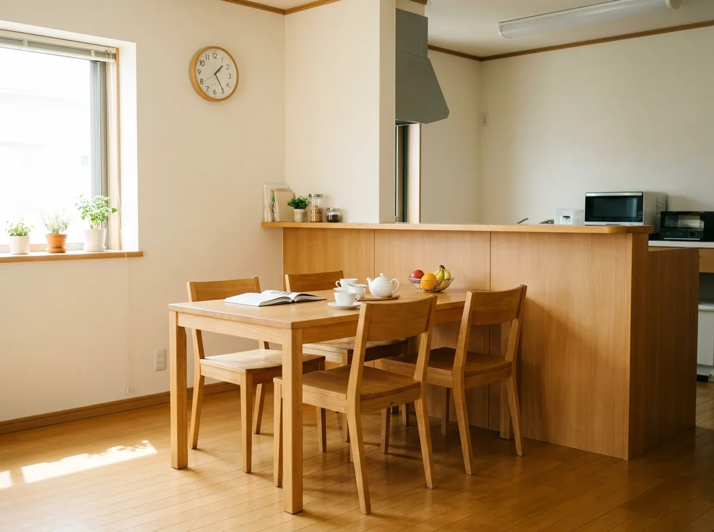
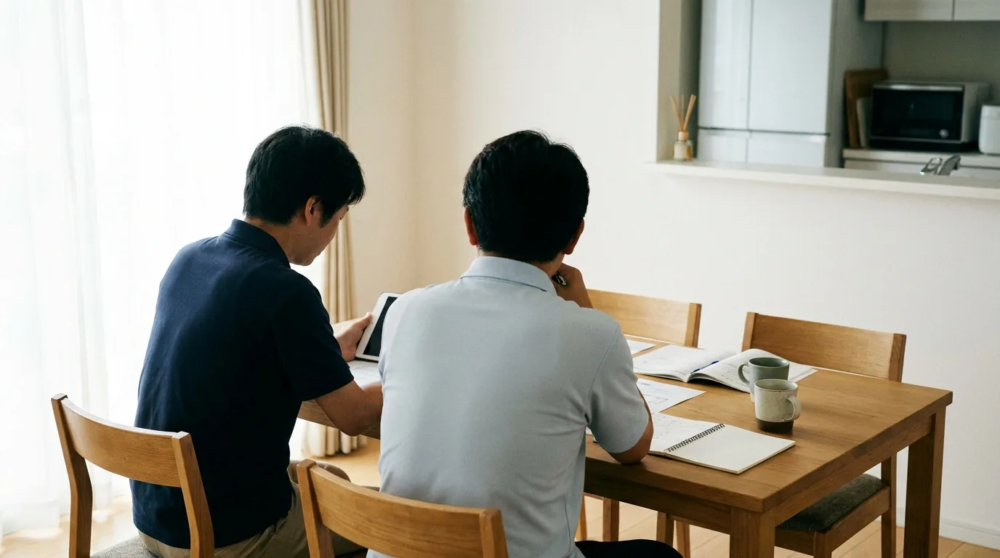

独立LP_動画埋め込み案_20260912/ 配下を相対パス参照。本番デプロイ時はこのLP専用assetsへのコピー・パス修正が必要）。福祉未経験からの独立・開業でも大丈夫です。
物件探しから行政の指定申請、開業後の運営・入居者募集まで、専属スタッフが伴走します。
※ 収益・期間の数値はいずれも一定の前提を置いたモデルケースです。実際の結果を保証するものではありません。


障がい者グループホームの開業を検討される方から、実際によくいただくご相談です。

その不安、OWLが一つずつ解消します。
未経験から独立を目指す方に、障がい福祉の現場を知る専属スタッフが、開業前から開業後まで伴走します。
加盟金0円。それでも、支援の質は落としません。
一般的なフランチャイズの加盟金は200万〜500万円。OWLは加盟金0円、月額固定のみの料金体系です。売上に応じたロイヤリティはいただきません。浮いた資金は物件と人材に回せます。
たとえば加盟金が300万円かかる場合、その300万円は物件の改修費や、開業後半年分の運転資金に置き換えられる金額です。初期費用を抑えられる分だけ、自己資金要件を満たしやすくなり、融資審査の準備にもゆとりが生まれます（融資審査への影響度は要確認）。
収入の多くは国と自治体の給付費です。売上の8割以上が給付費のため、景気変動や価格競争の影響を受けにくく、未回収のリスクが小さいのが特徴です。
飲食業や小売業のように、近隣店舗との値下げ競争で単価が下がるということが起きにくい業態です。請求先が国・自治体という決まった相手であるため、個人向けサービス業と比べて売掛金の未回収リスクは小さい傾向があります。
グループホームは入居者様が長く生活される場所です。毎月あらたに集客し直す必要がなく、稼働が安定すればグループホーム経営の収益も安定します。
飲食店や美容室のように毎月ゼロから新規顧客を集める必要がなく、一度入居が決まれば、生活の場として長期間ご利用いただくのが一般的です。稼働が安定した棟は、経営者にとって月々の収支が読みやすい「基礎収益」として積み上がっていく（増棟時の資金計画にも活用できる）という利点があります。
検討の際は、加盟金だけでなく「開業後にどこまで一緒に動いてくれるか」で比べてください。
「まず行政書士さんに相談してみよう」——それも、間違いではありません。 指定申請の書類作成そのものは行政書士の専門分野です。ただ、検討段階でよく見かける行政書士のオウンドメディア（ブログ・比較サイト）は、 自社への依頼に誘導するため、フランチャイズなど他の選択肢を「やめたほうがいい」と否定する書き方をしていることがあります。 情報を集めるほど、かえって「結局どこに頼めばいいのか」が分からなくなった、というご相談を実際によくいただきます。
行政書士に依頼して指定は取れても、その後の物件探し・資金調達・入居者募集・運営までは、業務範囲の外です。 OWLは「書類を通すこと」がゴールではなく、開業後の運営が回るところまでをフルサポートする前提でご一緒します。 書類作成だけを個別に依頼するケースと、どこまで違うのかを下の表にまとめました。
| 行政書士へ 個別依頼 | 一般的な障がい者GH フランチャイズ | OWL福祉事業 | |
|---|---|---|---|
| 費用の形 | 指定申請の着手金＋報酬（案件ごとの単発費用、要確認） | 加盟金 200万〜500万円が相場 | 加盟金0円 |
| 継続費用・ロイヤリティ | 継続契約なし（単発業務が基本） | 月額費用＋売上ロイヤリティが一般的 | 月額固定のみ／売上ロイヤリティ0円 |
| 開業前の物件探し | 対応範囲外が一般的（要確認） | 本部により対応範囲が◯（要確認） | エリア調査・物件の適合確認まで同行 |
| 資金調達（融資） | 対応範囲外、または金融機関の紹介のみが一般的（要確認） | 自分で金融機関を回るケースが多い（要確認） | 事業計画書の作成〜金融機関面談の同行まで支援 |
| 現役オーナーの見学 | 対応範囲外（そもそも運営事業所を持たない） | 比較検討時に県内・オンラインいずれの見学も実現しなかった、という声あり | 運営中のオーナーの事業所へ実際に見学可能 |
| 指定が取れたあとの関わり | 指定取得＝業務完了で契約終了が一般的（要確認） | 開業（指定取得）までが中心の本部が多い（要確認） | 入居者募集・請求業務・実地指導対応まで継続 |
| スタッフの研修・教育 | 対応範囲外 | オーナー自身で用意（要確認） | 職種別の研修動画・マニュアルを用意 |
※ 「行政書士へ個別依頼」列は、指定申請という業務の一般的な範囲にもとづく記載であり、特定の事務所を指すものではありません。「オウンドメディアで他の選択肢を否定する書き方をしている」旨は、特定事務所名を出さずに事実として書けているか、公開前に必ず精査してください。「一般的な障がい者GHフランチャイズ」列も同様に業界一般の相場観にもとづく記載です（要確認マーク＝裏取り必須）。「現役オーナーの見学」の行は、2026年8月30日インタビューでご本人が話された、比較検討時の実体験にもとづきます（事例①参照）。動画は下の「開業ストーリー」事例①でご覧いただけます。
「儲かるから」ではありません。足りていないからです。

国内の障がいのある方は約964万人。一方でグループホームの利用者は約17万人にとどまり、およそ57倍の開きがあります。入居先が見つからず待っている方が各地にいます。
この差は都市部だけでなく、地方でも同じように見られます。相談支援事業所には「空きが出たら連絡してほしい」という順番待ちの相談が常に一定数あり、既存事業所の稼働はすでに高い水準で推移しています。親御さんの高齢化にともなって「自分たちが元気なうちに、子どもの生活の場を見つけておきたい」という相談も増えており、住まいを必要とするタイミングは今後も途切れにくいと見られています。
障がい者グループホームは、障害福祉サービスの「共同生活援助」という国の制度にもとづく事業です。売上の中心は国と自治体から支払われる給付費で、個人のお客様からいただく売掛金と違い、未回収のリスクが小さいのが特徴です。
給付費は、入居者ごとに決まった単価と、サービス提供実績にもとづいて国保連（国民健康保険団体連合会）へ毎月請求する仕組みです。景気動向や近隣の価格競争によって単価そのものが変動することはなく、決まった請求フローに沿って運営すれば収入の見通しが立てやすい点が、一般的な個人向けサービス業と異なります。もちろん制度改定（報酬改定）による単価の見直しはあるため、その際の情報はOWLから随時ご案内します。
専用の建物を新築する必要はありません。既存の戸建てやアパートを活用できるため、他業種と比べて初期投資を抑えやすく、自己資金の目安は約230〜560万円です。
飲食店や介護施設のように、用途に合わせた大規模な新築・改装が前提の業態と比べると、入居定員4〜10名程度の戸建て・アパートをベースに、消防・建築基準を満たす最小限の改修で開設できるケースが多いのが特徴です。空き家・空室の活用にもつながるため、物件所有者側にとってもメリットがある活用方法として説明できるか、事業側で確認のうえ記載してください。
大きな施設を建てる必要はありません。地域にある戸建てやアパートを活かして始められます。


※ 写真はすべてイメージです。実際の物件ではありません。
いちばん知りたいところなので、先に出します。
| 福祉サービス費（給付費） | ¥2,940,194 /月 |
|---|---|
| 支出（人件費・家賃・水道光熱費ほか） | −¥2,337,847 /月 |
| 営業利益 | ¥602,347 /月 |
※ 上記は1棟／入居者4名／稼働が安定した状態を前提としたモデルケースです。 地域・物件条件・人員配置により変動します。実際の収益を保証するものではありません。開業直後は稼働が上がりきらず、1棟目は月30万円弱程度にとどまることもあります（詳しくは下の「運営ストーリー」もご覧ください）。


※ 稼働が安定した状態を前提としたモデルケースです。地域・物件条件により変動します。 くわしい収支計画は、無料の資料または個別相談でお渡しします。
どんなご相談から始まり、何をご提案し、いまどうなっているか。
ご本人が話されている様子は、下の動画でもご覧いただけます。
「儲かりそうだから」で始めた方は、ここにはいません。お二人に共通するのは、身近にいる障がいのある方の将来を案じた経験と、比較検討の末にOWLを選んだという事実です。開業までの経緯、迷った点、OWLが実際に何をしたかを、包み隠さず書きます。
※ お名前と写真はまだ仮です。物件写真はイメージで、この事業所のものではありません。 内容・金額は2026年8月のインタビューでご本人が話された取材時点の実績です（決算書での裏取りは未）。 三重の運営規模（2棟・3棟目着手）は、2026年7月の商談記録（見学先としての案内）とも一致しています。 地域・物件条件により金額は変動します。インタビュー内容の掲載自体は2026-09-12にご本人同意を確認済みですが、写真・動画の公開範囲は別途最終確認が必要です。



老人ホーム紹介会社を営むご主人と、特別支援学級で約13年教壇に立った奥様。他社では見学すら叶わなかった比較検討の末、2025年4月にOWLへ加盟し、2026年8月に2棟目を開設しました。1棟目の月商は満室で約190万円です。
※ 2026年8月30日のインタビューでご本人が話された内容にもとづきます。 金額・期間は取材時点のもので、地域・物件条件により変動します。



小学校の元教員で、校長も経験。経営知識ゼロからのスタートでしたが、OWLの伴走で計4行から1,200万円の融資を実行。現在は2棟＋サテライト2（計11居室）を運営し、3棟目の申請直前（目標4棟）です。
※ 2026年8月29〜30日のインタビューでご本人が話された内容にもとづきます。 金額・期間は取材時点のもので、地域・物件条件により変動します。
開業後にも壁はあります。実際にどんな壁があり、どう乗り越えたかをお伝えします。
「開業支援だけ」を売りにする業者（行政書士事務所を含む）に頼むと、指定は取れても、その先の運営で行き詰まりやすくなります。
入居者募集のやり方が分からない、請求業務でつまずく、相談支援事業所との関係が作れない——こうした壁の対処を教わっていないまま独り立ちすると、
稼働が上がらず赤字を繰り返してしまうケースが後を絶ちません。
だからOWLは、開業前と同じ熱量で、入居者募集の営業支援・営業ツールの提供を含む運営フォローに応じます。
下の4つの壁は、その一部です。
指定申請が通った時点で契約終了。入居者募集のやり方も、請求業務の締切対応も自己流。稼働が上がらず赤字が続く。
開業後も専属担当が継続伴走。相談支援事業所への訪問同行・請求業務サポート・研修動画で、稼働と収支を安定させる。
▲ 「1棟目は入居1名で月商30万円弱からのスタート、2.5〜3名でようやく収支トントン、5名満室で月商190万円」——愛知のオーナー様ご本人が運営の実態を語っています（2026年8月30日撮影・掲載同意確認済み／動画そのものの掲載可否は別途最終確認）
「何を相談できるか」に加えて、「誰が・いつ・どこまで動くか」が分かる支援体制へ。
※ 以下は支援内容を具体化するための確認案です。黄色の箇所は、提供可否・担当体制・契約条件を事業側で確認してから確定します。◯は未確定値であり、実績値ではありません。

1記録・請求・運営指導の準備を、現場の書類を見ながら一緒に進めます。何を・いつまでに・誰が直すのかを、その場で一覧化して持ち帰ります。
定期確認
訪問は月◯回・1回◯時間。支援記録、勤務表、請求前の確認事項を担当と照合します。担当するエリアサポーターが窓口となり、請求担当・運営指導対応の専門スタッフへ社内でつなぐ体制を取ります。
記録の不足・入力漏れを確認し、修正箇所と担当者、提出までの期限を一覧にします。返戻が生じた場合は、理由の確認から再請求の準備まで相談できます。
通知内容と提出期限を共有いただき、必要書類の洗い出し・事前点検・改善事項の整理を実施。制度改定時には変更点と書類の更新箇所を追加で案内します。
確認後に残すもの
書類点検リスト、修正事項一覧、次回までの対応期限。
2入居者募集から資金繰りまで、稼働が伸びない原因を数字と活動記録で確かめます。「なんとなく入居が決まらない」で終わらせず、訪問件数・問い合わせ件数・見学件数のどこで止まっているかを切り分けます。
定例面談
月◯回・1回◯分。問い合わせ・見学・入居の件数と収支を確認し、翌月の行動を決めます。面談はエリアサポーターが窓口となり、必要に応じて相談支援事業所への訪問同行を実施するスタッフが同席します。
相談支援事業所への訪問先、紹介数、見学後の反応を整理。初回は◯件・◯時間を目安に同行し、案内資料と説明内容を一緒に見直します。追加同行の条件も事前に共有します。
入居人数別の収支、人件費、手元資金、入金までの資金繰りを確認。増棟は既存棟の稼働と人員の余力を見て、投資時期と資金計画を検討します。
確認後に残すもの
募集活動の記録、収支見通し、担当者と期限を記した翌月の行動計画。
3採用時の教育から日々の支援まで、職種に合わせた学習と現場での振り返りをつなぎます。管理者・サービス管理責任者・世話人・生活支援員など、職種によって配置基準と業務範囲が異なるため、研修内容もひとまとめにせず職種別に用意しています。
定例研修＋必要時の補講
月◯回・1回◯分。制度改定、新人入職、理解が不十分な項目があるときは追加研修を調整します。研修動画は社内制作のため、新人入職のタイミングに合わせて個別に受講計画を組めます。
全◯日・計◯時間の研修を、制度と役割、支援記録の演習、緊急時の連絡手順に分けて実施。管理者・サービス管理責任者・世話人など、対象職種を明示します。
受講後◯日以内に担当が実務上の疑問を確認。確認テストと実務チェックで理解度を把握し、未習得項目は再受講・個別相談につなげます。
確認後に残すもの
職種別の受講記録、理解度チェック、現場で確認する項目と再確認日。
経過した月数だけで支援を切り替えず、請求・人員・募集活動が回っているかを担当と確認し、相談頻度を調整します。
頻度を切り替える基準・確認者・追加支援の費用は、支援計画書に記載します。
※ 「エリアサポーター」は仮称、頻度の数字は仮置きです。呼称・頻度・連絡手段は事業側に確認のうえ確定してください。
主担当：氏名・担当エリア・経歴・得意分野を掲載予定
専門相談の連携先：請求・運営指導・採用育成の担当者と役割を確認
通常相談は◯曜日〜◯曜日の◯時〜◯時に、電話・チャットで受付。主担当が不在の場合は共通窓口の副担当が引き継ぎ、受付から◯営業時間以内に初回の連絡を行います。
相談履歴・対応中の課題・次の連絡予定を共有し、担当交代時にも経緯が伝わる体制を整えます。
請求期限の切迫、急な欠員などは緊急窓口へ。対象となる相談、受付時間、初回連絡の目安◯分以内、状況連絡の間隔◯分を事前に案内します。夜間・休日の対応可否も支援範囲に明記します。
初回連絡は解決までの時間を約束するものではありません。状況を確認して担当と次の対応を決めます。利用者の安全に関わる緊急時は、現場の緊急対応手順を優先します。
定期訪問、オンライン相談、研修、資料添削について、基本料金に含む回数と範囲を契約前に提示。追加訪問・交通費・再研修・外部専門家への依頼は、費用の有無と金額を確認してから手配します。
OWLは準備・点検・相談を支援し、雇用判断、日々の支援、書類の最終確認・提出などの事業者側の役割も、作業ごとに分けて確認します。
支援実績の確認欄：定例面談実施◯回／予定◯回、研修受講完了◯人／対象◯人（◯年◯月〜◯年◯月、対象：OWL加盟◯事業所、直営の含有は要確認。出典：面談記録・受講台帳／未集計）。支援の実施状況と売上などの経営成果は分けて確認します。
2人目の入居に半年かかった三重の事例から、相談支援事業所への訪問同行で解消する打ち手をまとめました。
三重のオーナー様は、2棟目開設後、2人目の入居が決まるまでに半年かかりました。 入居者の紹介元は、相談支援事業所（利用者と事業所をつなぐケアマネジャーのような存在）です。 OWLは開業してからも、相談支援事業所への訪問・関係づくりの営業活動を一緒に組み立てます。 「箱を作れば入る」わけではないという現実と、そこから抜け出す打ち手の両方を伝えます。
毎月締切のある国保連請求と、自治体の実地指導。三重のオーナー様は2026年2月の運営指導を重い指摘なく通過しています。
グループホームの売上は、国保連（国民健康保険団体連合会）への毎月の請求業務で決まります。 サービス提供実績記録票の入力、月10日までの請求書伝送、25日の請求書・領収書発行など、毎月決まった締切のある事務作業です。 また、自治体による定期的な運営指導（実地指導）もあります。三重のオーナー様は2026年2月の運営指導で重たい指摘はなく通過しました。 OWLは請求業務のサポートと、実地指導への対応を継続してご支援します。
職種ごとに配置基準・業務範囲が異なるため、未経験スタッフの教育は開業後の大きな課題になります。
管理者・サービス管理責任者・世話人・生活支援員・夜間支援員など、職種ごとに配置基準と業務範囲が異なります。 未経験のスタッフを採用した場合の教育も、開業後にオーナー様が向き合う課題の一つです。 OWLでは、職種別の業務内容や制度の基礎を解説する研修動画（社内制作・法定研修対応）を用意し、新人教育の負担を軽くする準備を進めています。
1棟目が軌道に乗ると、次の関心は決まって「2棟目・3棟目をどう増やすか」に移ります。
1棟目が軌道に乗ったあとの関心は、決まって「2棟目・3棟目をどう増やすか」です。 三重のオーナー様は、2棟＋サテライト2で計11居室を運営しながら、3棟目の申請直前（目標4棟）まで進んでいます。 愛知のオーナー様も、1棟目開設から11ヶ月後に2棟目を開設されました。 OWLは1棟目の運営だけでなく、展開ペースの相談・エリア戦略まで継続してご一緒します。
▲ 「障害ある子供の将来を支えたくて開業。障害を持つ子供の親からの感謝の言葉が多く、やってよかったと実感」——三重のオーナー様が、開業後の生活の変化と今後の展望を語っています（2026年8月30日撮影・掲載同意確認済み／動画そのものの掲載可否は別途最終確認）
※ 本セクションは、上記2事例のインタビュー内容と、2026年9月時点の商談ログ横断分析（過去の商談56件）にもとづく一般的な傾向をまとめたものです。 個別の運営状況は、物件・地域・人員体制により異なります。
※ 今回追加した「3つのサポート」・段階別フォロー・相談窓口は、上記事例の実績ではなく、支援内容の確認案です。具体的な提供条件は黄色の仮表示にしています（2026年9月13日作成）。
お問い合わせから開業まで、おおむね4ヶ月が目安です。
まずは資料をご覧ください。オンラインの説明会でも事業の全体像をご説明します。無理な勧誘はいたしません。
ご希望の地域・規模・ご予算をうかがい、実現できるプランをご提案します。
連携する金融機関とともに、事業計画書の作成から金利の交渉までご支援します。（融資支援の実績数字を入れる） ※ 融資の可否は金融機関の審査によります。
地域のニーズを調査したうえで、指定基準を満たす物件をお探しします。
自治体ごとに運用が異なります。事前相談の同席と書類の準備をサポートします。
消防・建築基準を満たす形で、必要最小限の改修プランをご提案します。
管理者・サービス管理責任者・世話人など、指定に必要な人員の採用をご支援します。
申請書類の作成から提出、指定を受けるまでフォローします。開設後も継続してご支援します。
相談支援事業所への営業同行、請求業務のサポート、実地指導への対応まで。「開業がゴール」にしません。
1棟目の運営が安定してきたら、エリア戦略・資金計画を含めて次の一棟をご相談いただけます。
上の流れを、開所予定日から逆算して確認する準備表です。物件・自治体との事前相談・採用状況に合わせて担当と日程を調整し、指定日が確定するまで見直します。
※ 時期は既存案の仮置きで、開業期間の実績・保証ではありません。小さい画面では表を左右にスクロールできます。
| 段階 | 時期の目安 | OWLが行う支援 | オーナー様の準備・一緒に確認するもの |
|---|---|---|---|
| 計画・物件 | 開所4ヶ月前〜 | エリアの需要・物件適合・必要資金を整理。候補物件ごとに確認事項を共有します。 | 希望地域・予算・物件資料を共有。候補比較表と資金計画を確認します。 |
| 資金調達 | 3.5ヶ月前〜 | 事業計画と収支見通しを作成し、金融機関面談の準備・同行を調整します。 | 自己資金・借入状況・必要資料を準備。面談後の追加資料と回答期限を確認します。 |
| 申請・改修 | 2ヶ月前〜 | 自治体との事前相談、申請書類、図面・設備の確認を並行して進めます。 | 工事範囲・見積を確認。申請と工事の進捗表で、担当者・期限を共有します。 |
| 採用・育成 | 1ヶ月前〜 | 求人条件の整理、面接の準備、職種別研修を支援。全◯日・計◯時間の受講計画を作成します。 | 雇用条件と採用を決定。勤務表、受講記録、開業前チェックリストを確認します。 |
| 開所直前・当日 | 開所◯日前〜当日 | 相談支援事業所への訪問同行、見学案内の準備、記録・連絡手順の最終確認を行います。 | 受け入れ準備と未完了事項を確認。開所日の体制と緊急連絡先を共有します。 |
| 初回請求・定着 | 開所後◯日〜◯か月 | 請求準備、日々の記録、募集活動を確認。開業担当から運営担当へ課題と対応期限を引き継ぎます。 | 実績記録と勤務状況を共有。初回請求の確認結果と、次回面談までの行動を整理します。 |
予定の変更時は、遅れている項目・開所日への影響・次の確認日を共有。開業担当と運営担当が同席する引継ぎ面談を◯回設け、開所後の連絡先と未完了事項を確認します。
開業して終わりではありません。運営が回り、事業を伸ばすところまでご一緒します。
▲ 「相談支援事業所への訪問を重ねたことが、2人目の入居につながった」——三重のオーナー様の実体験にもとづきます（当該インタビューの動画掲載可否は別途最終確認）。
1候補物件と収支計画は、家賃・改修費・採用費・入金までの運転資金を分けて確認。面談は月◯回・1回◯分を目安に、物件契約前の未確認事項と判断期限を一覧にします。
開業までの逆算タイムライン（開所日から逆算・目安）
物件選定
資金調達・融資書類作成
指定申請書類作成・自治体同行
内装改修の業者手配・図面チェック
人材採用・研修
※ 目安の期間です。物件の状態・自治体の審査スピードにより前後します（要確認）。
2採用・改修・申請の進捗を週◯回確認。求人票や申請書類の修正箇所、工事の未完了事項を整理し、開所前に管理者・担当者と受け入れ準備を点検します。
3訪問先ごとに紹介・問い合わせ・見学の進捗を記録し、月◯回の面談で次の訪問先と案内内容を見直します。資料の修正、訪問同行、問い合わせ対応について、本部と事業所の担当範囲を確認します。
入居者募集のライフサイクル
相談機関・行政・ケアマネへの営業同行
チラシ・HP制作
問い合わせ対応の代行
内見案内
契約書類作成支援
稼働率モニタリング
請求・人員・稼働・収支を月◯回の面談で確認。相談の回答だけで終えず、次回までに誰が何をするかを記録し、対応の完了と残っている課題を確認します。
毎月の請求サイクルに沿って伴走するので、締切に一人で追われません。
実地指導の直前にチェックリストで事前確認できます。
制度変更・報酬改定は分かり次第ご案内します。
| 研修日 | 科目 | 対象職種 | 形式 |
|---|---|---|---|
| 1日目 | 制度・法定研修の基礎 | 全職種 | 動画＋テキスト |
| 2日目 | 支援記録・国保連請求の実務 | 世話人・生活支援員 | 動画＋演習 |
| 3日目 | 緊急時対応・虐待防止研修 | 全職種 | 動画＋確認テスト |
※ プログラム名・日数・科目構成は仮称・仮置きです。実際の研修体系は事業側に必ず確認のうえ公開してください。
※ 上記は現状ご提供中・準備中のツールと、その提供タイミングを一般化して記載したものです。個別のツール名・提供有無・提供タイミングは事業側に必ず確認してから公開してください。
「開業ストーリー」「運営ストーリー」でご紹介したお二人の言葉から、一部を抜粋しています。
「比較していた他社では、県内での見学もオンラインでの見学も実現しませんでした。OWLは実際に運営中のオーナーの現場を見せてくれた。一番支援が手厚そうだと感じています。」
「経営知識ゼロからのスタートでしたが、PLの読み方から一つずつ教えてもらいました。2人目の入居まで半年かかったときも、相談支援事業所への訪問に一緒に動いてくれました。」
「障害のある子どもの将来を支えたくて開業しました。障害を持つお子さんの親御さんから感謝の言葉をいただくことが多く、やってよかったと実感しています。」
※ 2026年8月29〜30日のインタビューでご本人が話された内容からの抜粋です。掲載内容自体はご本人同意を確認済み（2026-09-12時点）ですが、顔写真の掲載可否は別途最終確認が必要です。動画本編は「開業ストーリー」「運営ストーリー」でご覧いただけます。
よくいただくご質問にお答えします。
物件取得・内装工事・運転資金を含め、約230〜560万円が目安です。物件の条件や規模により変動します。「全額を自己資金で用意する」前提ではなく、下記のように自己資金＋融資で組み立てるのが一般的です。
自己資金 — 物件取得・改修費の一部と、開業直後の運転資金（人件費・家賃の数ヶ月分）に充てます。目安は総資金の3〜4割程度で、金融機関の審査でも重視されるポイントです。
融資（金融機関からの借入） — 残りの大部分をまかないます。担当が事業計画書の作成から金融機関面談の同行まで支援し、（融資支援の実績数字を入れる）金利・返済期間の相談にも同席します。
連帯保証の要否 — 金融機関・融資制度によって連帯保証人や担保の要否が異なります。個別の条件は面談時に一緒に確認し、代替の制度（信用保証協会など）も検討します（要確認）。
※ 上記は一般的な組み立て方の説明であり、個別の資金計画は物件・規模・自己資金額によって異なります。詳細は個別相談でシミュレーションをお渡しします。
1〜2営業日以内にご連絡します。